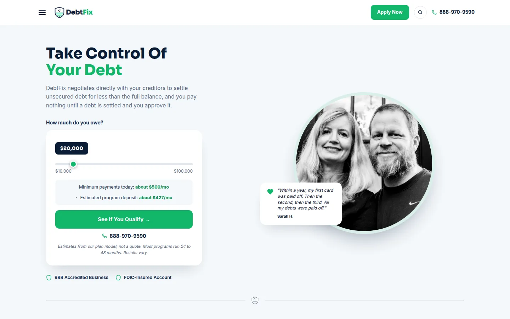
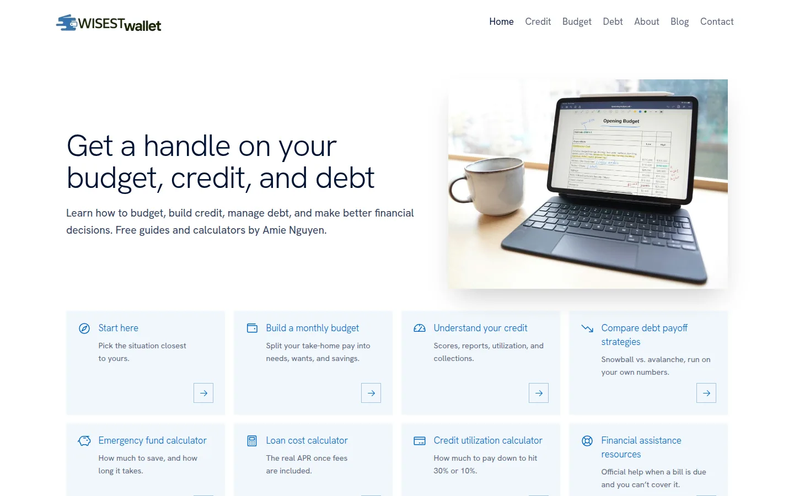
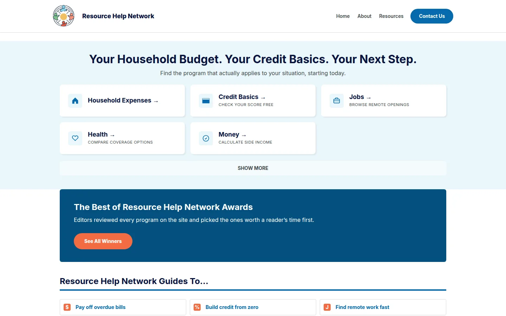
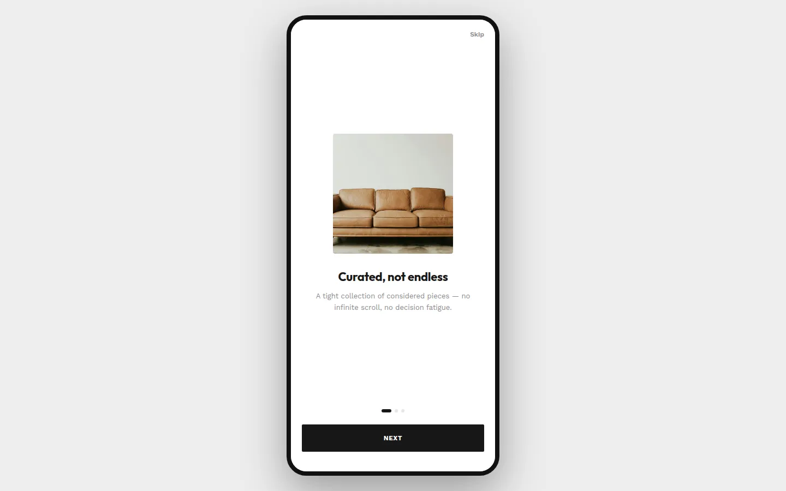
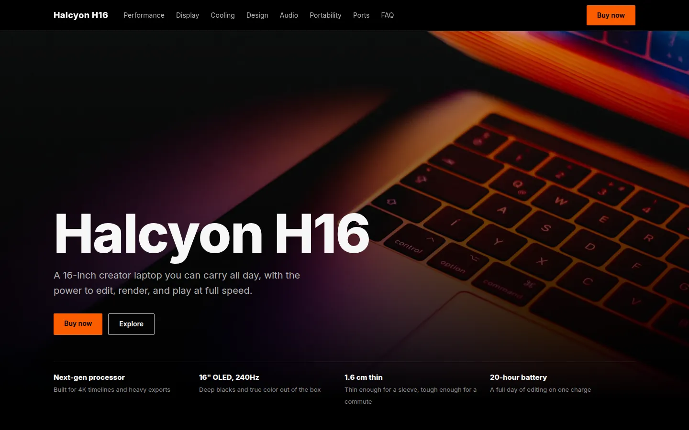
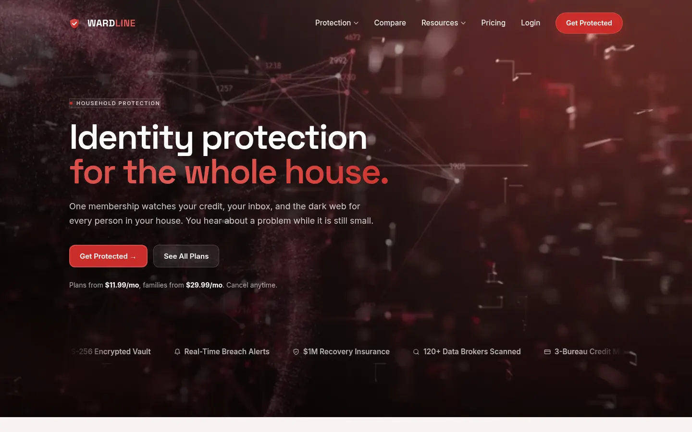
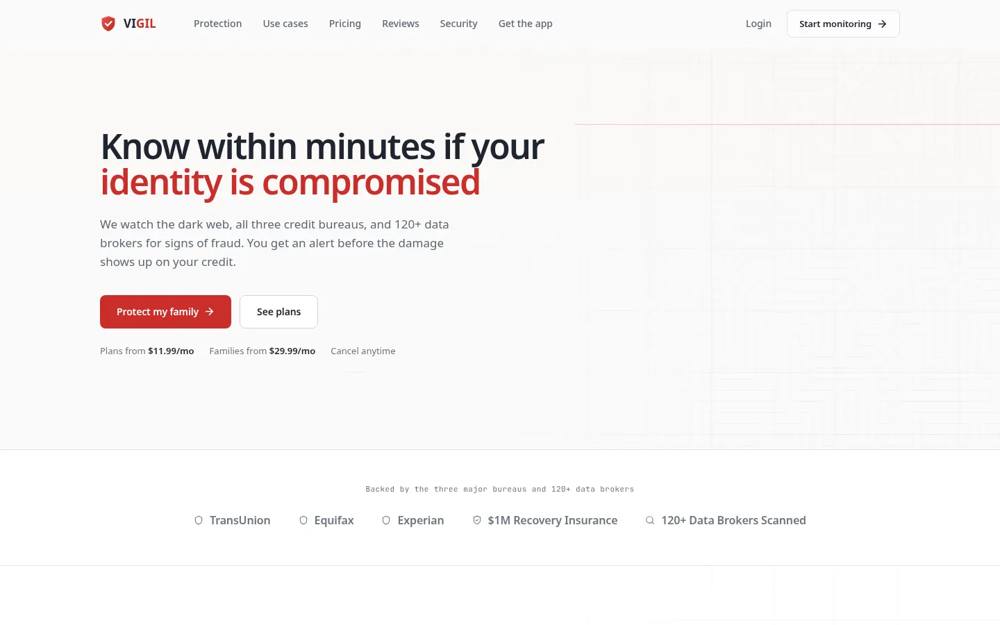
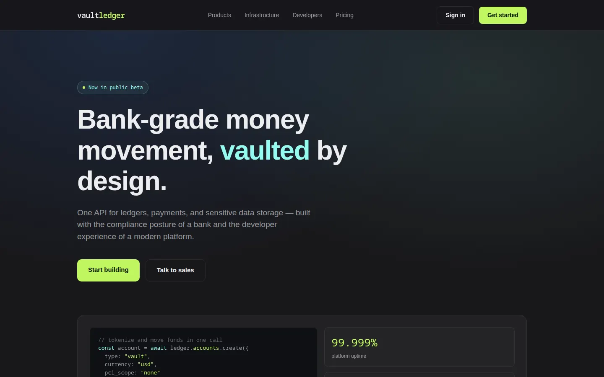
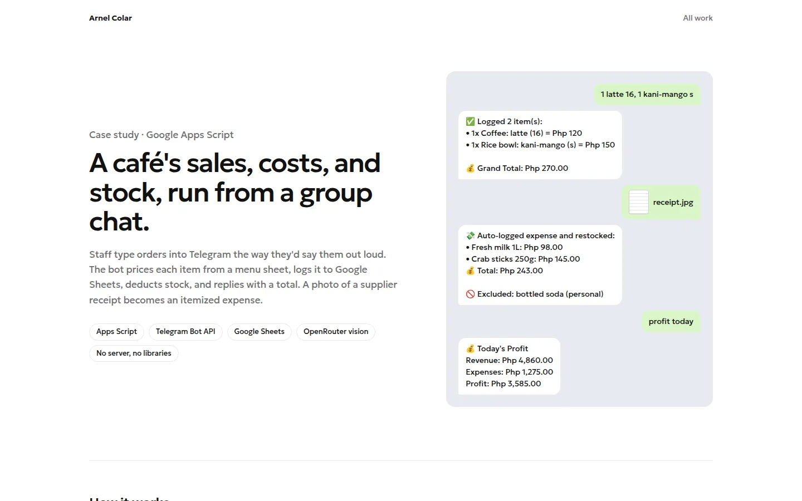

A debt settlement company's site. The homepage slider estimates a monthly deposit, and I also built its cost-of-debt calculator.
I design and build landing pages, WordPress themes, calculators, and scripts. Every project below is live or clickable.

A debt settlement company's site. The homepage slider estimates a monthly deposit, and I also built its cost-of-debt calculator.

A custom WordPress theme for a personal finance blog. I wrote its four calculators: debt payoff, emergency fund, loan cost, and credit utilization.

A WordPress site with step-by-step guides on bills, credit, jobs, and health coverage, grouped by topic.

A furniture shopping app. The case study covers the problem, a persona, wireframes, and a design system. The prototype runs in your browser.

A launch page for a 16-inch laptop. Sticky section nav with scrollspy, a pinned display story, swipeable feature cards, and an FAQ.

A dark page for a household protection plan. An animated network hero, an eight-layer feature explorer, pricing tiers, and a three-step setup flow.

The same product category in a lighter direction. A circuit-trace hero, alternating use-case rows, compliance badges, and member reviews.

A page for developers evaluating a ledger and tokenization API. It pairs code samples with uptime stats, and a vault panel shows card numbers swapped for tokens.

A Telegram bot that logs a café's orders, expenses, and stock to Google Sheets, and reads supplier receipts with a vision model.
Calculators for debt cost, payoff dates, emergency fund targets, and credit utilization, written in plain JavaScript.
Themes made for one site each, with topic pages, guide and blog templates, and calculators built in.
Pages with one job, usually getting a visitor to apply or call. Pricing and trust badges go near the buttons.
HTML, CSS, and JavaScript with no framework. Halcyon has scrollspy navigation, a pinned scroll story, and swipeable cards.
Personas, wireframes, a small design system, and a prototype people can click through before any real code exists.
Google Apps Script connected to Telegram, Google Sheets, and an AI model. Café staff log sales and receipts by sending a message.
About
I sketch the layout, pick the type and colors, then write the HTML and CSS myself. The page you approve is the page that goes live.
Most of my client work is in personal finance and debt relief. Those readers are careful with money, so I keep pricing plain and disclaimers honest.
Find me on GitHub